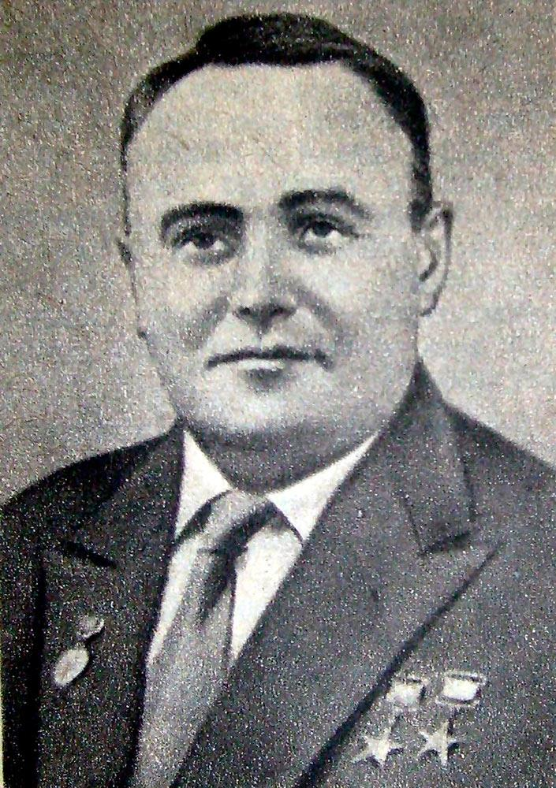

|
|---|
Сергей Павлович Королёв(30 декабря 1906 (12 января 1907), Житомир, Волынская губерния, Российская империя — 14 января 1966, Москва)Советский учёный, конструктор ракетно-космических систем, председатель Совета главных конструкторов СССР (1946—1966), академик АН СССР (1958).Сергей Королёв является одним из основных создателей советской ракетно-космической техники, обеспечившей стратегический паритет и сделавшей Союз Советских Социалистических Республик передовой ракетно-космической державой, и ключевой фигурой в освоении человеком космоса, основателем практической космонавтики. В 1955 году (задолго до лётных испытаний ракеты Р-7) С. П. Королёв, М. В. Келдыш, М. К. Тихонравов вышли в правительство с предложением о выведении в космос при помощи ракеты Р-7 искусственного спутника Земли (ИСЗ). Правительство поддержало эту инициативу. В августе 1956 года ОКБ-1 вышло из состава НИИ-88 и стало самостоятельной организацией, главным конструктором и директором которой был назначен С. П. Королёв. 4 октября 1957 года был запущен на околоземную орбиту первый в истории человечества искусственный спутник Земли. Запуск спутника высоко поднял международный авторитет СССР как страны передовой науки и техники. 12 апреля 1961 г. С. П. Королёв снова поразил мировую общественность. Создав первый пилотируемый космический корабль «Восток-1», он реализовал первый в мире полёт человека в космос — гражданина СССР Юрия Алексеевича Гагарина — по околоземной орбите. Сергей Павлович в решении проблемы освоения человеком космического пространства не спешил. Первый космический корабль сделал только один виток: никто не знал, как человек будет себя чувствовать при столь продолжительной невесомости, какие психологические нагрузки будут действовать на него во время необычного и неизученного космического путешествия. За подготовку первого полёта человека в космос С. П. Королёв был вторично удостоен звания Героя Социалистического Труда. |
Меню |
Фотография |
©2021 |
|---|